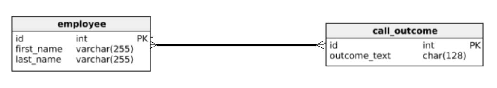
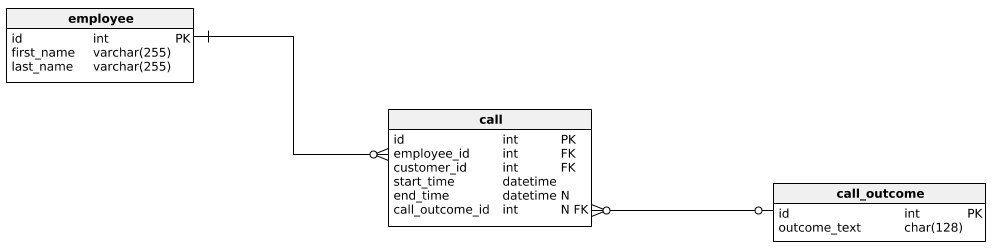

A relational between 2 tables, where one value will appear multiple times in the other table.
The relational database system when designed with tables containing primary and foreign keys will ensure that data must exist in the primary key table for the data to be valid in the foreign key table.
A joining table should be created, where both primary keys from the main tables become a composite key in the joining table.
A joining table may also be referred to as
Junction table
Mapping table
Cross-reference table
Bridge table
Intersection table


SQL = Structured Query Language.
Like MongoDB it also has CRUD operations.
SQL is split into 2 command groups:
DDL = Data Definition Language - used to create databases, tables and other objects for the SCHEMA
CREATE/DROP/ALTER table
CREATE/DROP/ALTER database
CREATE/DROP/ALTER index
CREATE/DROP/ALTER constraint
DML = Data Manipulation Language. The developer CRUD operations.